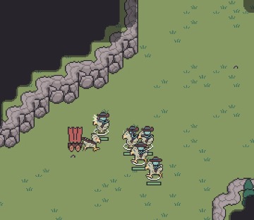
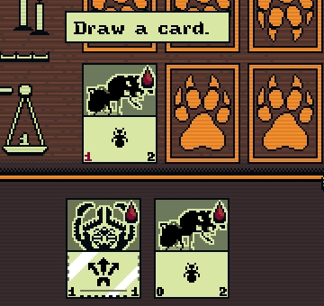
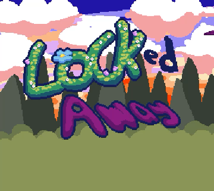

About Me
Hello! My name is Matthew Madden. I'm a software engineer with 5 years of professional experience and a particular interest in graphics, game development, and performance-sensitive software.
Outside of work, I spend much of my time developing games and graphics projects. I enjoy tackling challenges related to performance, simulation, rendering, and systems design, and I use these projects as an opportunity to grow my skills as an engineer.
Below you will find a selection of the work I'm most proud of.
—

Gold Rush
Gold Rush is a Wild West RTS game made in my own custom engine using C++ and OpenGL. The game began as an experiment in RTS game design and grew into a fully-fledged game project.
The game has LAN and online multiplayer and uses a peer-to-peer, deterministic lockstep networking strategy. The game also features randomly generated maps, a single-player campaign, a skirmish mode, a replay mode for viewing past matches, and a map editor which I used to create the campaign.
The game is feature-complete, and I have released a playtest build of it on Steam targeting Windows, Mac, and Linux. I plan to release the game in full this Fall.
Learn More >>

Inscryption (Multiplayer Version)
This project is a multiplayer version of the popular roguelike card game Inscryption. The original verison of the game was made by Daniel Mullens Games. As I played the original, I found myself wishing that the game had a multiplayer mode. Since it did not, I decided the only thing left to do was to make one myself!
For this project, I completely re-implemented Inscryption and its core gameplay mechanics in the Godot game engine. The game allows players to build decks and play against each other in peer-to-peer matches supported by a dedicated matchmaking server.
Learn More >>

Locked Away
Locked Away is a 2D metroidvania platformer made in Godot. My brother and I originally made this game for the 2023 Seattle Game Jam. After the jam was finished, we spent another month polishing the game and expanding it with more content.
In Locked Away, players play as a princess who has been locked into the dungeons of a castle. The princess has long hair which she can use as a grappling hook to swing around, but her hair has been cut off by the jealous queen! Players must collect magic seeds throughout the level to regrow the princess's hair so that she can escape.
Learn More >>